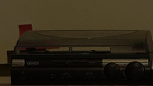
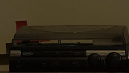

Axis Vidius Mini Drone & Controller
The Axis Vidius is a very small (about 2" x 2" x 1") remote-controlled quadcopter drone, which makes for a great desk toy. This mini drone is a lot of fun to play with during homework breaks (it flies for about 6 minutes on a full charge, so I'm not distracted for too long), and is also pretty effective at annoying my cat. Though it was a little bit pricey for its size (I think I paid $100), the selling point was the tiny 480p camera on the front that allows for first-person viewing & recording from a mobile device.
 
